After taking audiences deep into the stunning oceans of Pandora with The Way of Water, visionary director James Cameron pivots from the soothing, bioluminescent depths to a harsh, unforgiving new biome in Avatar: Fire and Ash. This third installment drastically shifts the tone of the franchise, introducing audiences to the darker, more volatile corners of the alien moon and upending everything we thought we knew about the Na'vi.
Meet the Ash People

Concept art depicting the volcanic environment and the aggressive Ash Horde clan.
Up until this point, the Avatar franchise has primarily focused on the harmonious relationship between the Na'vi and their planetary deity, Eywa. The Omatikaya (the forest clan) and the Metkayina (the water clan) represented a peaceful coexistence with nature. Fire and Ash flips this dynamic on its head with the introduction of the Ash People.
Inhabiting a highly volcanic and aggressively unstable region of Pandora, the Ash People are a clan shaped by destruction rather than growth. Their culture represents the darker side of the Na'vi. Cameron has stated that while the first two films showed the "good" side of the native inhabitants and the "bad" side of humans, this film blurs those moral lines, forcing the Sully family to confront enemies of their own species.
"We are exploring a side of Pandora that has been forged in fire. It's beautiful, but it's incredibly dangerous."
A Change in Perspective: Lo'ak's Journey
One of the most significant narrative shifts in Avatar: Fire and Ash is the change in narration. While Jake Sully (Sam Worthington) served as our guide through the first two films, his rebellious and passionate son, Lo'ak (Britain Dalton), takes over as the narrator for the third film.
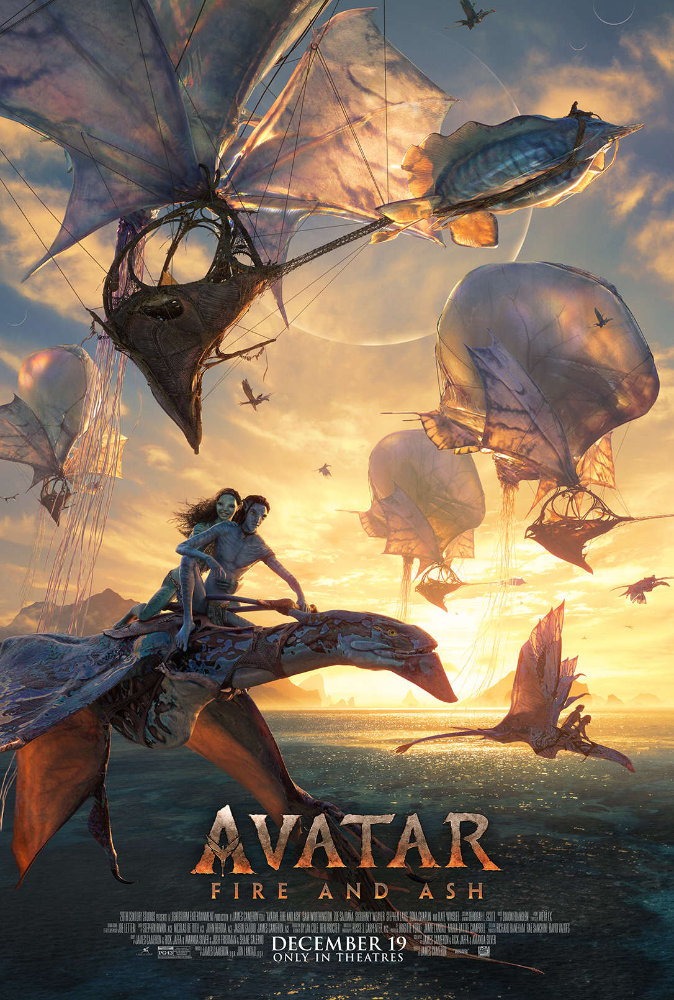
Lo'ak takes center stage as the narrator and emotional core of the new film.
This passing of the torch provides a fresh perspective. We are no longer viewing Pandora through the eyes of a former human learning the ways of the world; instead, we are experiencing it through an adolescent Na'vi struggling with his identity, his responsibilities, and the looming shadow of his father's legacy.
Visuals & Cutting-Edge Technology

New flying creatures adapted for the ash-choked skies of the volcanic regions.
James Cameron is known for pushing the boundaries of cinematic technology. Where the previous film required the invention of entirely new underwater motion-capture technology, Fire and Ash brings innovations in rendering fire, smoke, and complex particle physics. The glowing embers, rivers of molten lava, and ash-choked skies of the new biome contrast sharply with the lush greens and vibrant blues of previous films, offering a visual palette that is both terrifying and mesmerizingly beautiful.
The Expanding Cast
The core cast returns, bringing new depth to their evolving characters. However, it is the new additions that have fans most excited, specifically those portraying the antagonistic Ash clan.
- Oona Chaplin as Varang, the ruthless and charismatic leader of the Ash People.
- Sam Worthington as Jake Sully, struggling to protect his family in an unfamiliar land.
- Zoe Saldaña as Neytiri, whose worldview is challenged by hostile Na'vi.
- Britain Dalton as Lo'ak, our new narrator and the emotional core of the film.
- Stephen Lang as Recombinant Quaritch, whose path to redemption or ruin continues.
- Jack Champion as Spider, navigating his complex relationship with both humans and Na'vi.
The Future of Pandora
Avatar: Fire and Ash acts as a crucial turning point for the overarching saga. It challenges the established lore, introduces profound moral complexities, and sets the stage for the highly anticipated fourth and fifth installments. By forcing the Sully family out of their comfort zone and into the literal fire, the film proves that Pandora still holds countless secrets, and the fight for its soul is far from over.
Visual Media Gallery
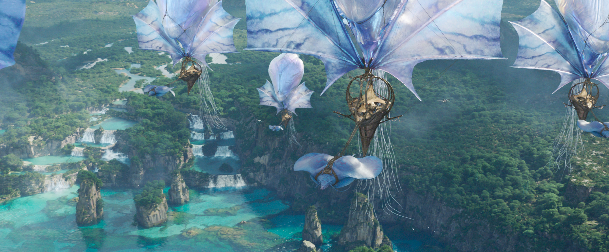
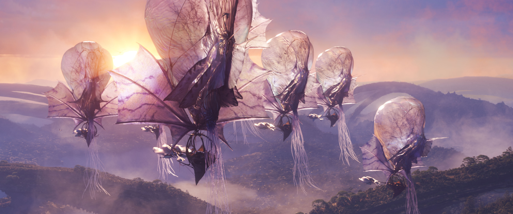
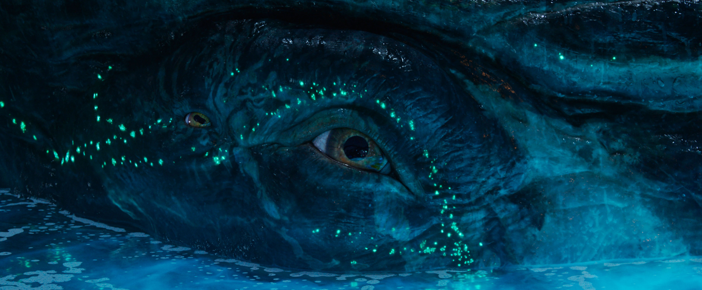
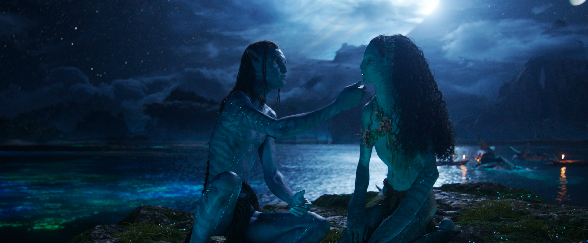
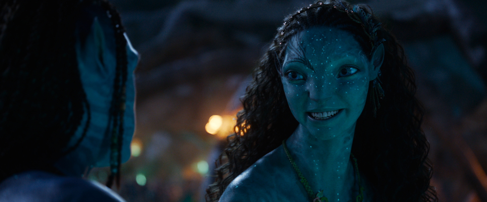
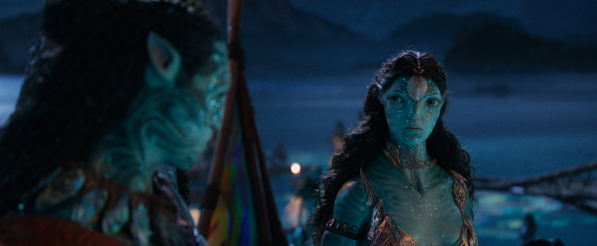
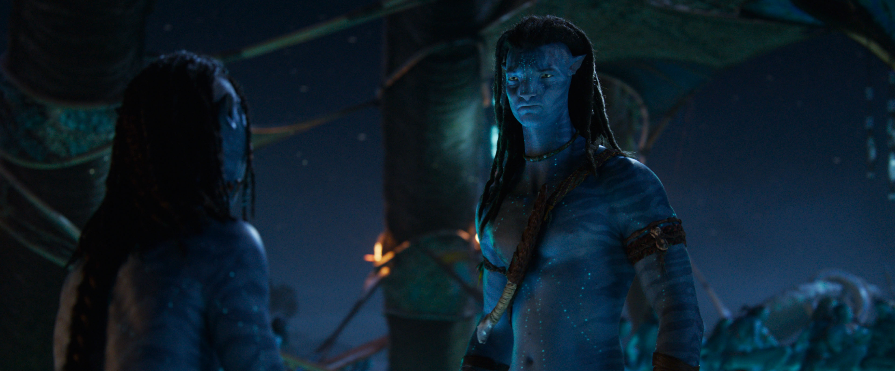
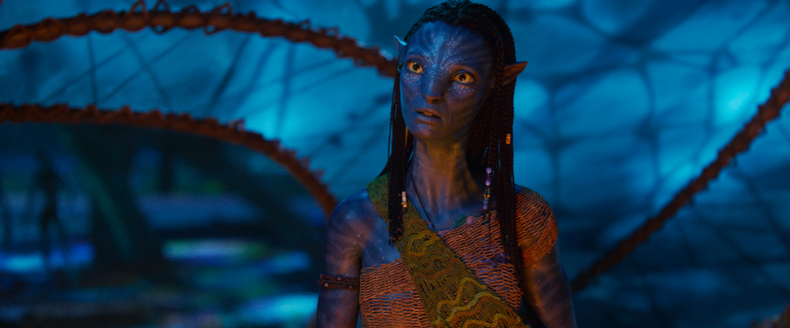
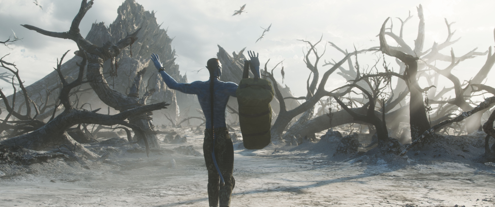
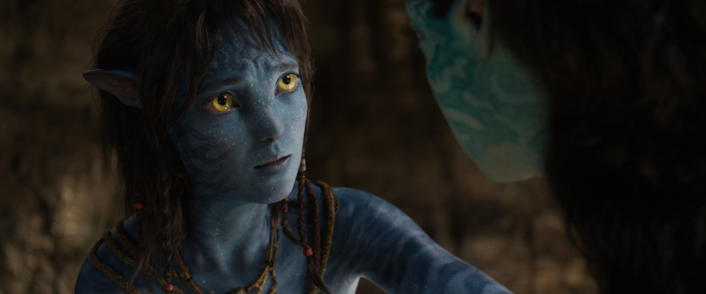